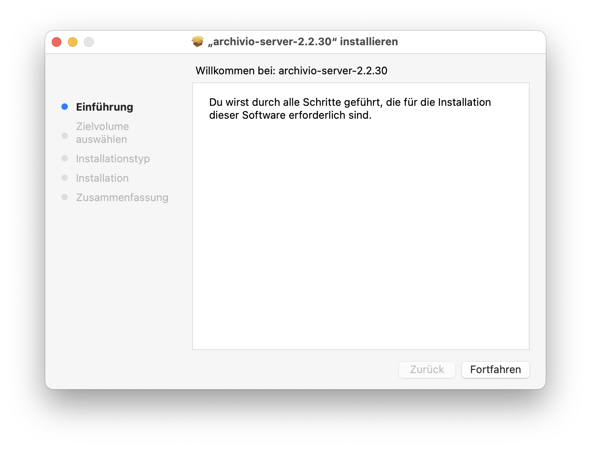
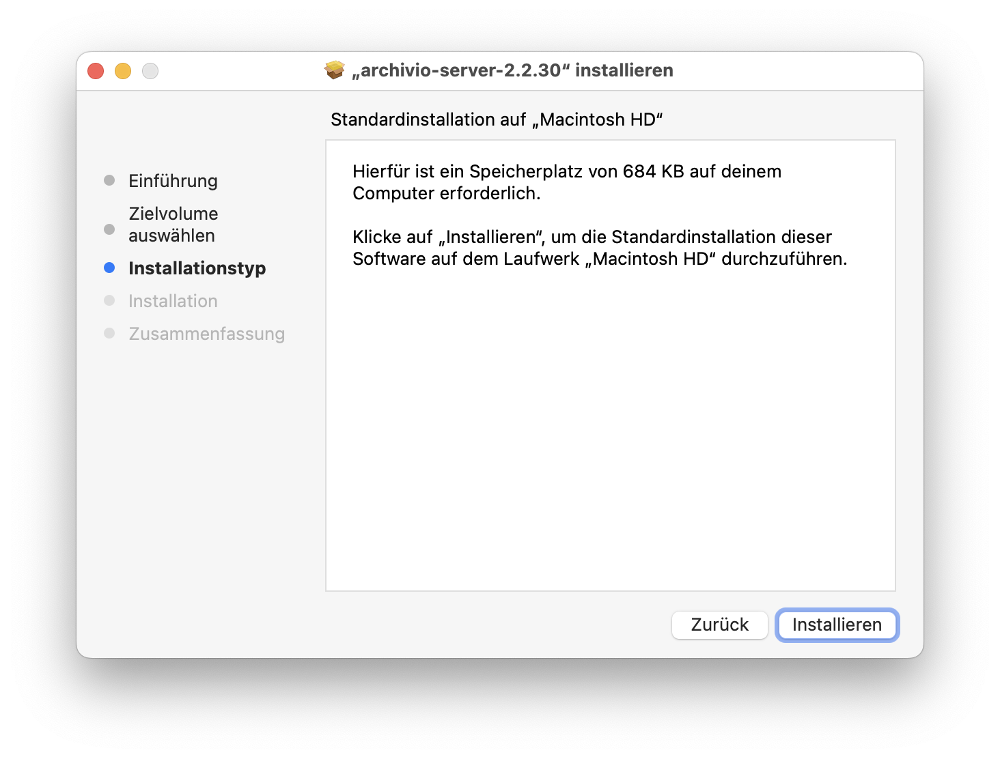
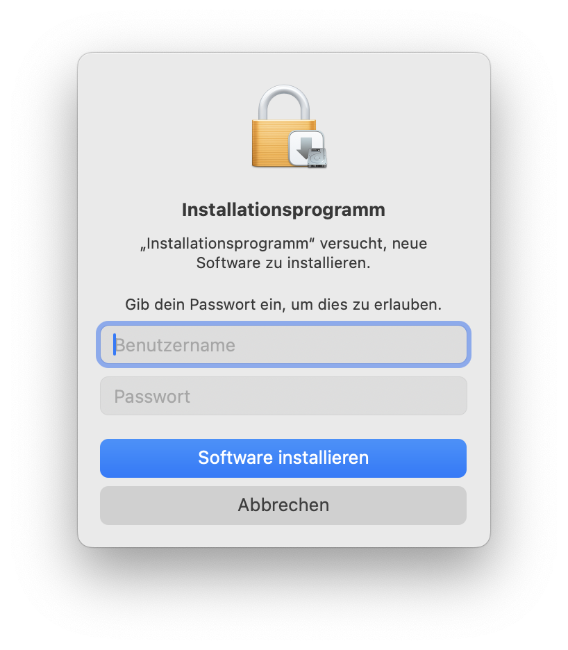
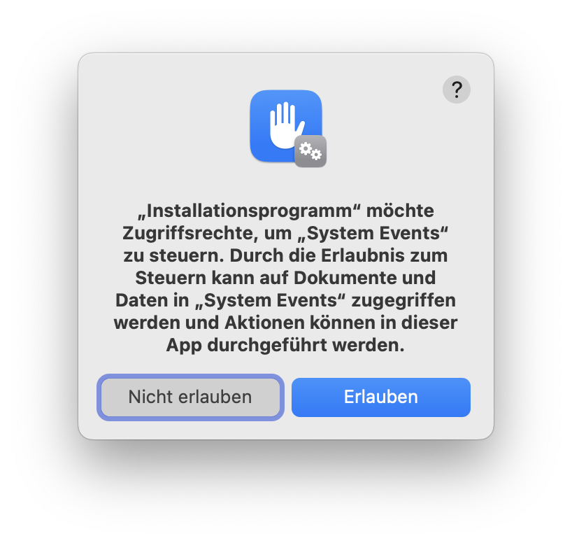
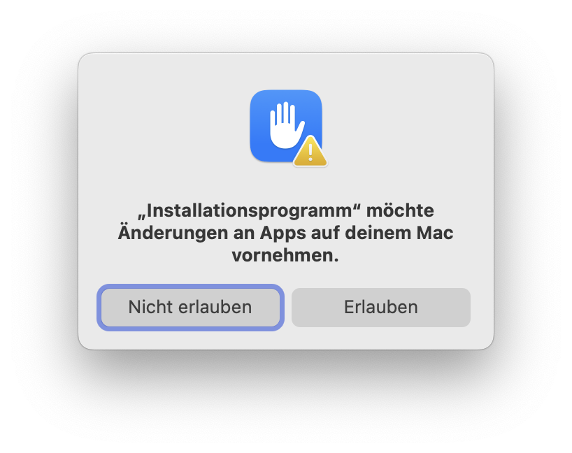
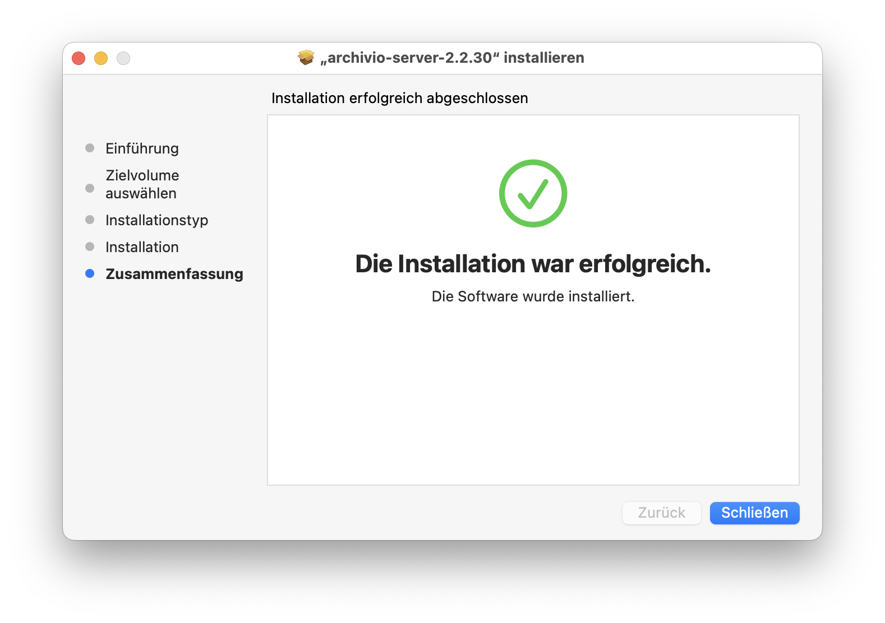
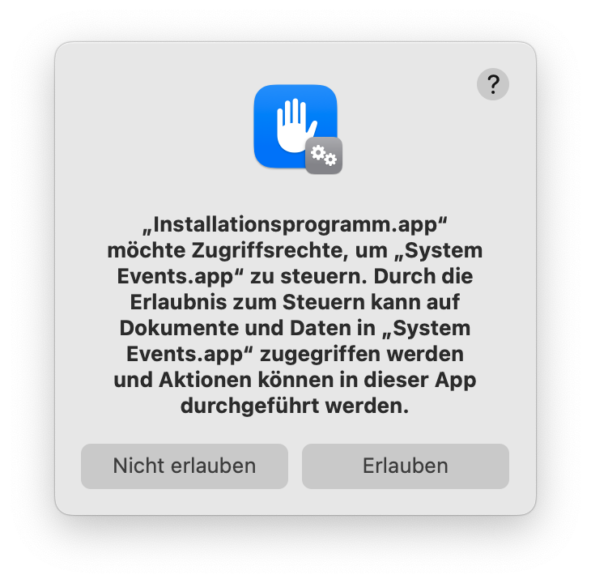
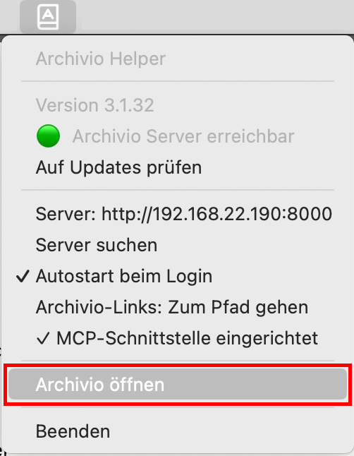

Installation
Archivio besteht aus zwei Teilen: dem Server, der auf einem fixen Mac läuft, und dem optionalen Helper auf jedem Mitarbeiter-Mac. Optimal läuft der Mac mit Archivio Server immer, ist per Kabel mit dem Netzwerk und Server verbunden und hat mindestens 32 GB RAM.
Mit der Installation gelten der Haftungsausschluss und das Merkblatt zum Umgang mit euren Daten.
Schritt 1 — Archivio Server installieren
- Doppelklick auf die heruntergeladene
.pkg-Datei — der Installer öffnet sich. - Auf Fortfahren und dann Installieren klicken.
- Mac-Passwort eingeben und auf Software installieren klicken.
- Zwei Berechtigungsdialoge erscheinen — jeweils Erlauben klicken.
- „Die Installation war erfolgreich" — auf Schließen klicken.






Berechtigungsdialoge beim ersten Start
Beim ersten Öffnen und beim ersten Scan erscheinen zwei Berechtigungsdialoge — jeweils Erlauben klicken.


Erster Start
Archivio Server ist eine reine Menüleisten-App — es öffnet sich kein Fenster und kein Dock-Symbol beim Start. Die Weboberfläche selbst über die Menüleiste aufrufen:
- Das Programm „Archivio Server" starten (Programme-Ordner oder Spotlight).
- Oben rechts in der Menüleiste erscheint das Archivio-Symbol — anklicken und „Archivio öffnen" wählen.

Die Weboberfläche ist ausserdem direkt unter http://<Server-IP>:8000 erreichbar — im Beispiel http://192.168.22.190:8000. Bei dir ist es die IP deines Geräts oder der Gerätename, jeweils mit dem Port 8000. Darüber verbinden sich die Helper mit dem Server, und du kannst die Weboberfläche lokal unter dieser Adresse öffnen.
Beim ersten Öffnen ist die Datenbank leer. Zuerst unter Verwaltung → Projekte den Pfad zu eurem Server angeben, die gewünschten Projekte aktivieren und dann einen ersten Scan starten.